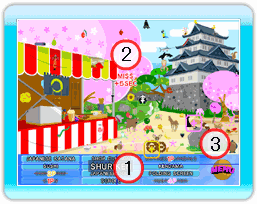

11 |
Affichage à l'écran durant une partie |
 |
|
Affichage à l'écran durant une partie
 1: Nom des Objets Voici la liste des éléments que vous devez trouver. Lorsque vous trouvez un élément, son nom est barré sur la liste. Vous pouvez agrandir le nom d'un élément en plaçant le curseur dessus. 2: MISS Si vous faites une erreur et appuyez sur le bouton A, là où il n'y a aucun objet, vous recevrez une pénalité de 5 secondes. Lorsque vous jouez à deux ou plus, un MISS entraînera une interruption du contrôle du curseur. 3: Bouton MENU Appuyez dessus pour faire apparaître la fenêtre du menu. Fenêtre MENU Placez le curseur sur l'une des rubriques suivantes et appuyez sur le bouton A pour faire votre choix.  1: YES
1: YESRetour à la partie en cours. 2: NO Retour à l'écran d'introduction. INDICES Lors d'une partie et après qu'une minute soit passée, un indice pour trouver un objet apparaîtra automatiquement. Juste avant que l'indice apparaisse un petit bruit retentira. Après le premier indice, d'autres indices s'afficheront toutes les 30 secondes. |
 |
 |
 |